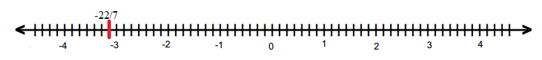
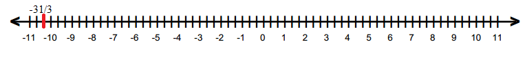

Question:1
Write down the numerator of each of the following rational numbers:
(i)
(ii)
(iii)
(iv)
(v) 5
Solution:
Numerators are:
(i) 7
(ii) 15
(iii) 17
(iv) 8
(v) 5
Question:2
Write down the denominator of each of the following rational numbers:
(i)
(ii)
(iii)
(iv) 15
(v) 0
Solution:
Denominators are:
(i) 5
(ii) 34
(iii) 82
(iv) 1
(v) 1
Question:3
Write down the rational number whose numerator is (−3) × 4, and whose denominator is (34 − 23) × (7 − 4).
Solution:
According to the question:
Numerator = (3) × 4 = 12
Denominator = (34 23) × (7 4) = 11 × 3 = 33
∴ Rational number =
Question:4
Write the following rational numbers as integers:
Solution:
Integers are 7, 12, 34, 73 and 95.
Question:5
Write the following integers as rational numbers with denominator 1:
Solution:
Rational numbers of given integers with denominator 1 are:
Question:6
Write down the rational number whose numerator is the smallest three digit number and denominator is the largest four digit number.
Solution:
Smallest three-digit number = 100
Largest four-digit number = 9999
∴ Required rational number =
Question:7
Separate positive and negative rational numbers from the following rational numbers:
Solution:
Given rational numbers can be rewritten as:
Thus, positive rational numbers are:
or,
Negative rational numbers are:
or,
Question:8
Which of the following rational numbers are positive:
(i)
(ii)
(iii)
(iv)
Solution:
The numbers can be rewritten as:
Positive rational numbers are (ii) and (iii), i.e., .
Question:9
Which of the following rational numbers are negative?
(i)
(ii)
(iii)
(iv)
Solution:
The numbers can be rewritten as:
Negative rational numbers are (i) and (iii).
Question:10
Express each of the following as a rational number with positive denominator:
(i)
(ii)
(iii)
(iv)
Solution:
Rational number with positive denominators:
(i) Multiplying the number by 1, we get:
(ii) Multiplying the number by 1, we get:
(iii) Multiplying the number by 1, we get:
(iv) Multiplying the number by 1, we get:
Question:11
Express as a rational number with numerator:
(i) 6
(ii) −15
(iii) 21
(iv) −27
Solution:
Rational number with numerator:
(i) 6 is:
(ii)
(iii)
(iv)
Question:12
Express as a rational number with denominator:
(i) −14
(ii) 70
(iii) −28
(iv) −84
Solution:
as a rational number with denominator:
(i) −14 is:
(ii) 70 is:
(iii) −28 is:
(iv) −84 is:
Question:13
Express as a rational number with denominator:
(i) 20
(ii) 36
(iii) 44
(iv) −80
Solution:
3/4 as rational number with denominator:
(i)
(ii)
(iii)
(iv)
Question:14
Express as a rational number with numerator:
(i) −56
(ii) 154
(iii) −750
(iv) 500
Solution:
2/5 as a rational number with numerator:
(i)
(ii)
(iii)
(iv)
Question:15
Express as a rational number with numerator:
(i) 64
(ii) −16
(iii) 32
(iv) −48
Solution:
Rational number with numerator:
Question:16
Express as a rational number with denominator:
(i) 14
(ii) −7
(iii) −49
(iv) 1470
Solution:
Rational number with denominator:
Question:17
Write in a form so that the numerator is equal to:
(i) −2
(ii) 7
(iii) 42
(iv) −70
Solution:
Rational number with numerator:
Question:18
Select those rational numbers which can be written as a rational number with numerator 6:
Solution:
Given rational numbers that can be written as a rational number with numerator 6 are:
Question:19
Select those rational numbers which can be written as a rational number with denominator 4:
Solution:
Given rational numbers that can be written as a rational number with denominator 4 are:
122 (On multiplying by 6) = 613223 (On multiplying by 3) = 6934 (On multiplying by 2) = 68−67 (On multiplying by −1) = 6−7
Question:20
In each of the following, find an equivalent form of the rational number having a common denominator:
(i)
(ii)
(iii)
Solution:
Equivalent forms of the rational number having common denominator are:
(i) .
(ii)
(iii)
Question:21
Determine whether the following rational numbers are in the lowest form or not:
(i)
(ii)
(iii)
(iv)
Solution:
(i) We observe that 65 and 84 have no common factor i..e., their HCF is 1.
Thus, is in its lowest form.
(ii) We observe that 15 and 32 have no common factor i..e., their HCF is 1.
Thus, is in its lowest form.
(iii) HCF of 24 and 128 is not 1.
Thus, given rational number is not in its simplest form.
(iv) HCF of 56 and 32 is 8.
Thus, given rational number is not in its simplest form.
Question:22
Express each of the following rational numbers to the lowest form:
(i)
(ii)
(iii)
(iv)
Solution:
Lowest form of:
Question:23
Fill in the blanks:
(i)
(ii)
(iii)
(iv)
Solution:
Question:24
Write each of the following rational numbers in the standard form:
(i)
(ii)
(iii)
(iv)
(v)
(vi)
(vii)
(viii)
Solution:
(i) The denominator is positive and HCF of 2 and 10 is 2.
Dividing the numerator and denominator by 2, we get:
(ii) The denominator is positive and HCF of 8 and 36 is 4.
Dividing the numerator and denominator by 4, we get:
(iii)
The denominator is negative.
HCF of 4 and 16 is 4.
Dividing the numerator and denominator by 4, we get:
(iv) The denominator is negative.
HCF of 15 and 35 is 5.
Dividing the numerator and denominator by 5, we get:
(v) The denominator is negative.
HCF of 299 and 161 is 23.
Dividing the numerator and denominator by 23, we get:
(vi) The denominator is negative.
HCF of 63 and 210 is 21.
Dividing the numerator and denominator by 21, we get:
(vii) The denominator is negative.
HCF of 68 and 119 is 17.
Dividing the numerator and denominator by 17, we get:
(viii) The denominator is positive and HCF of 195 and 275 is 5.
Dividing divide the numerator and denominator by 5, we get:
Question:25
Which of the following rational numbers are equal?
(i)
(ii)
(iii)
(iv)
Solution:
(i)
(ii)
(iii)
(iv)
Question:26
If each of the following pairs represents a pair of equivalent rational numbers, find the values of x:
(i)
(ii)
(iii)
(iv)
Solution:
(i)
(ii)
(iii)
(iv)
Question:27
In each of the following, fill in the blanks so as to make the statement true:
(i) A number which can be expressed in the form
, where
p and
q are integers and
q is not equal to zero, is called a .....
(ii) If the integers
p and
q have no common divisor other than 1 and
q is positive, then the rational number
is said to be in the ....
(iii) Two rational numbers are said to be equal, if they have the same .... form.
(v) If p and q are positive integers, then is a ..... rational number and is a ..... rational number.
(vi) The standard form of −1 is ...
(vii) If is a rational number, then q cannot be ....
(viii) Two rational numbers with different numerators are equal, if their numerators are in the same .... as their denominators.
Solution:
(i) rational number
(ii) standard rational number
(iii) standard form
(iv)
(v) positive rational number, negative rational number
(vi)
(vii) zero
(viii) ratio
Question:28
In each of the following state if the statement is true (T) or false (F):
(i) The quotient of two integers is always an integer.
(ii) Every integer is a rational number.
(iii) Every rational number is an integer.
(iv) Every fraction is a rational number.
(v) Every rational number is a fraction
(vi) If is a rational number and m any integer, then
(vii) Two rational numbers with different numerators cannot be equal.
(viii) 8 can be written as a rational number with any integer as denominator.
(ix) 8 can be written as a rational number with any integer as numerator.
(x)
Solution:
(i) False; not necessary
(ii) True; every integer can be expressed in the form of p/q, where q is not zero.
(iii) False; not necessary
(iv) True; every fraction can be expressed in the form of p/q, where q is not zero.
(v) False; not necessary
(vi) True
(vii) False; they can be equal, when simplified further.
(viii) False
(ix) False
(x) True; in the standard form, they are equal.
Question:29
Draw the number line and represent the following rational numbers on it:
(i)
(ii)
(iii)
(vi)
(v)
(vi)
(vii)
(viii)
Solution:
(i)
.png)
(ii)
.png)
(iii)
.png)
(iv)
.png)
(v)
.png)
(vi)
.png)
(vii)

(viii)

Question:30
Which of the two rational numbers in each of the following pairs of rational numbers is greater?
(i)
(ii)
(iii)
(iv)
(v)
(vi)
(vii)
(viii)
Solution:
(i) We know that every positive rational number is greater than zero and every negative rational number is smaller than zero. Thus,
(ii) Because every positive rational number is greater than zero and every negative rational number is smaller than zero.
(iii) Because every positive rational number is greater than zero and every negative rational number is smaller than zero.
(iv)
(v)
(vi)
(vii)
(viii)
Question:31
Which of the two rational numbers in each of the following pairs of rational numbers is smaller?
(i)
(ii)
(iii)
(iv)
Solution:
(i)
(ii)
(iii)
(iv)
Question:32
Fill in the blanks by the correct symbol out of >, =, or <:
(i)
(ii)
(iii)
(iv)
Solution:
Question:33
Arrange the following rational numbers in ascending order:
(i)
(ii)
Solution:
(i) Ascending order:
(ii)
Question:34
Arrange the following rational numbers in descending order:
(i)
(ii)
Solution:
We have to arrange them in descending order.
(i)
(ii)
Question:35
Which of the following statements are true:
(i) The rational number lies to the left of zero on the number line.
(ii) The rational number lies to the left of zero on the number line.
(iii) The rational number lies to the right of zero on the number line.
(iv) The rational numbers are on the opposite side of zero on the number line.
(v) The rational numbers are on the opposite side of zero on the number line.
(vi) The rational number is one the right of on the number line.
Solution:
(i) False; it lies to the right of zero because it is a positive number.
(ii) False; it lies to the right of zero because it is a positive number.
(iii) True
(iv) True; they are of opposite signs.
(v) False; they both are of same signs.
(v) True; they both are of opposite signs and positive number is greater than the negative number. Thus, it is on the right of the negative number.
Question:36
Mark the correct alternative in each of the following:
in standard form is
(a) (b) (c) (d) None of these
Solution:
The denominator of is negative.
Firstly, multiply the numerator and denominator by −1 to make it positive.
Now,
HCF of 44 and 77 = 11
Dividing the numerator and denominator of by 11, we have
Thus, the standard form of is .
Hence, the correct answer is option (b).
Question:37
Mark the correct alternative in each of the following:
in standard form is
(a) (b) (c) (d) None of these
Solution:
The denominator of the rational number is positive.
In order to write the rational number in standard form, divide its numerator and denominator by the HCF of 102 and 119.
HCF of 102 and 119 = 17
Dividing the numerator and denominator of by 17, we have
Thus, the standard form of is .
Hence, the correct answer is option (a).
Question:38
Mark the correct alternative in each of the following:
A rational number equal to is
(a) (b) (c) (d) None of these
Solution:
We know that two rational numbers are equal if they have the same standard form.
The rational number is in its standard form.
Consider the rational number .
This rational number can be expressed in standard form as follows:
(Multiplying numerator and denominator by −1 to make denominator positive)
HCF of 10 and 15 = 5
Dividing the numerator and denominator of by 5, we have
Thus, the standard form of is , which is same as the given rational number.
So, the rational number equal to is .
Let us check why options (a) and (c) are not correct.
The standard form of is .
HCF of 10 and 25 = 5
Dividing the numerator and denominator of by 5, we have
The standard form of is .
HCF of 6 and 9 = 3
Dividing the numerator and denominator of by 3, we have
Hence, the correct answer is option (b).
Question:39
Mark the correct alternative in each of the following:
If , then x =
(a) 15 (b) 21 (c) −15 (d) −21
Solution:
Firstly, write as a rational number with denominator 35.
Multiplying the numerator and denominator of by 5, we have
Hence, the correct answer is option (c).
Question:40
Mark the correct alternative in each of the following:
Which of the following is correct?
(a) (b) (c) (d)
Solution:
Consider the rational numbers and .
We write the rational number with positive denominator.
Now, we write the rational numbers so that they have a common denominator.
LCM of 8 and 9 = 72
So, and
Now,
It can also be checked that and .
Hence, the correct answer is option (a).
Question:41
Mark the correct alternative in each of the following:
If the rational numbers and represent a pair of equivalent rational numbers, then x =
(a) 6 (b) −6 (c) 3 (d) −3
Solution:
It is given that the rational numbers and represent a pair of equivalent rational numbers.
We know that the values of two equivalent rational numbers is equal.
Hence, the correct answer is option (b).
Question:42
Mark the correct alternative in each of the following:
What is the additive identity element in the set of whole numbers?
(a) 0 (b) 1 (c) −1 (d) None of these
Solution:
If a is a whole number then a + 0 = a = 0 + a.
Therefore, 0 is the additive identity element for addition of whole number because it does not change the identity or value of the whole number during the operation of addition.
Hence, the correct answer is option (a).
Question:43
Mark the correct alternative in each of the following:
What is the multiplicative identity element in the set of whole numbers?
(a) 0 (b) 1 (c) −1 (d) None of these
Solution:
We know that if a is a whole number, then a × 1 = a = 1 × a.
Therefore, 1 is the multiplicative identity element for multiplication of whole numbers because it does not change the identity or value of the whole number during the operation of multiplication.
Hence, the correct answer is option (b).
Question:44
Mark the correct alternative in each of the following:
Which of the following is not zero?
(a) 0 × 0 (b) (c) (d) 9 ÷ 0
Solution:
If any number is multiplied by 0, the product is 0.
∴ 0 × 0 = 0
If 0 is divided by any number (≠ 0), the quotient is always 0.
∴ and
Division of any number by 0 is meaningless and is not defined.
∴ 9 ÷ 0 is not defined.
Hence, the correct answer is option (d).
Question:45
Mark the correct alternative in each of the following:
The whole number nearest to 457 and divisible by 11 is
(a) 450 (b) 451 (c) 460 (d) 462
Solution:
The numbers 450 and 460 are not divisible by 11.
Now, both the numbers 451 and 462 are divisible by 11.
Distance between 457 and 451 on the number line = 457 − 451 = 6
Distance between 457 and 462 on the number line = 462 − 457 = 5
Thus, the whole number nearest to 457 and divisible by 11 is 462.
Hence, the correct answer is option (d).
Question:46
Mark the correct alternative in each of the following:
If and are equivalent rational numbers, then x =
(a) 3 (b) 6 (c) 9 (d) 12
Solution:
It is given that the rational numbers and are equivalent rational numbers.
We know that the values of two equivalent rational numbers is equal.
Hence, the correct answer is option (c).
Question:47
Mark the correct alternative in each of the following:
If is expressed as a rational number with denominator 5, then the numerator is
(a) 3 (b) −3 (c) 6 (d) −6
Solution:
In order to express as a rational number with denominator 5, firstly find a number which gives 5 when −45 is divided by it.
This number is −45 ÷ 5 = −9.
Dividing the numerator and denominator of by −9, we have
Thus, the numerator is −3.
Hence, the correct answer is option (b).
Question:48
Mark the correct alternative in each of the following:
Which of the following pairs of rational numbers are on the opposite side of the zero on the number line?
(a) and (b) and (c) and (d) None of these
Solution:
The rational numbers and are positive rational numbers. We know that every positive rational number is greater than 0, so both the rational numbers and are represented by points on the right of the zero on the number line.
The rational numbers and are negative rational numbers. We know that every negative rational number is less than 0, so both the rational numbers and are represented by points on the left of the zero on the number line.
The rational numbers is a positive rational number whereas the rational number is a negative rational numbers. We know that every negative rational number is less than 0 and every positive rational number is greater than 0, so the rational number is represented by point on the right of the zero and is represented by point on the left of the zero on the number line.
Thus, the rational numbers and are on the opposite side of the zero on the number line.
Hence, the correct answer is option (c).
Question:49
Mark the correct alternative in each of the following:
The rational number equal to is
(a) (b) (c) (d)
Solution:
We know that two rational numbers are equal if they have the same standard form.
The standard form of is .
Consider the rational number .
HCF of 6 and 9 = 3
Dividing the numerator and denominator of by 3, we have
Thus, the standard form of is .
So, the rational number is equal to .
It can be checked that
Standard form of =
Standard form of =
Standard form of =
Hence, the correct answer is option (b).
Question:50
Mark the correct alternative in each of the following:
If , then x =
(a) −8 (b) 4 (c) −4 (d) 8
Solution:
Hence, the correct answer is option (a).